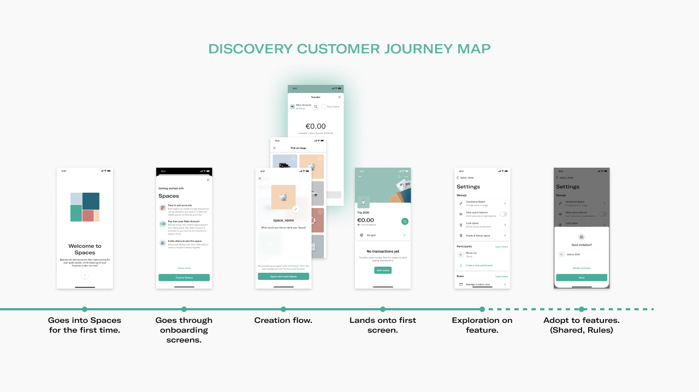
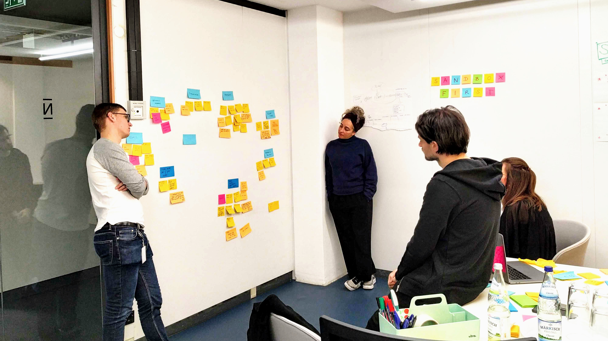
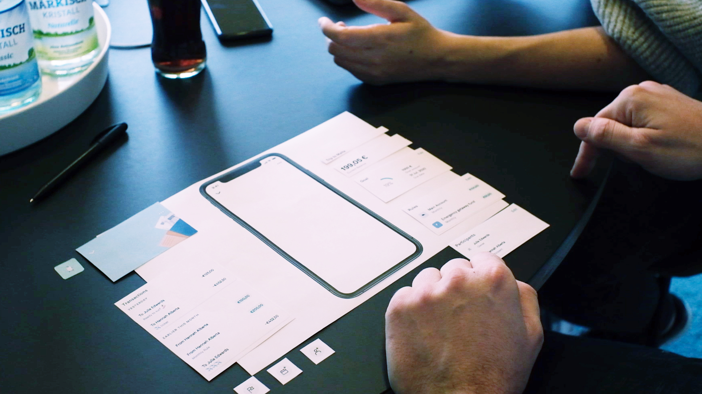
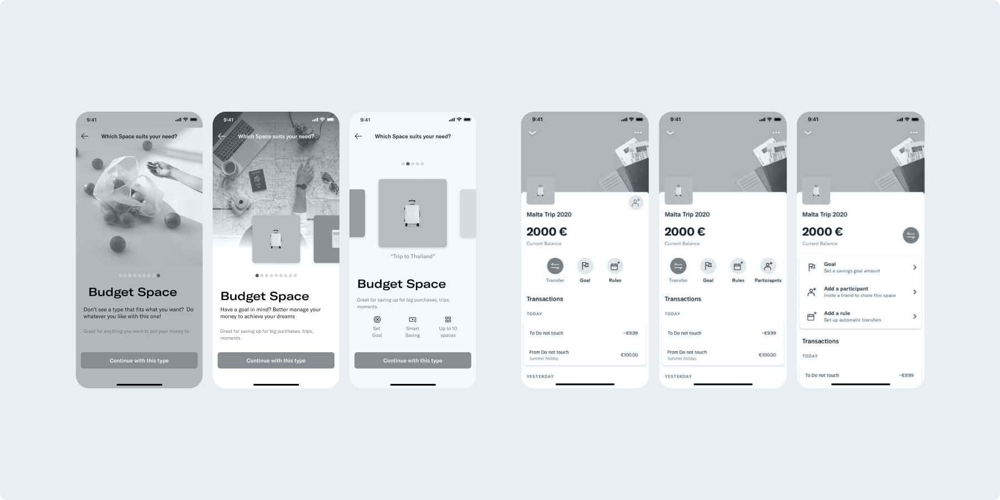
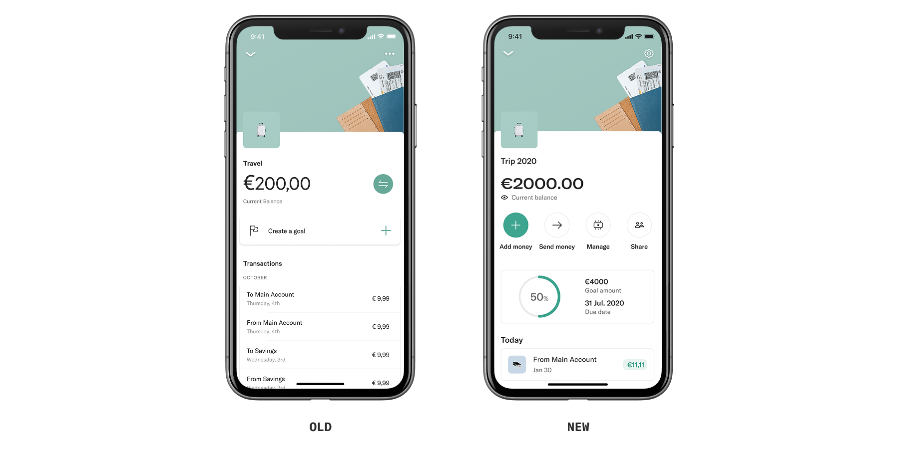
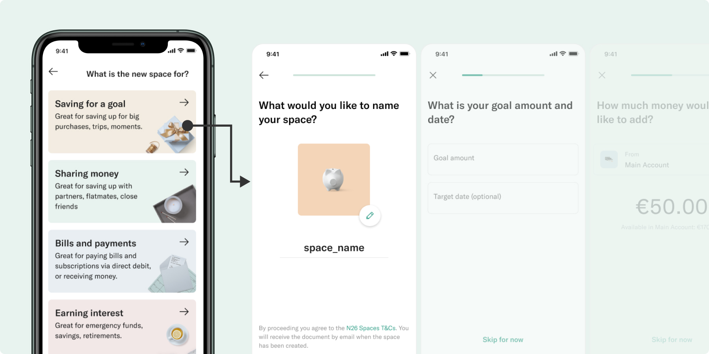
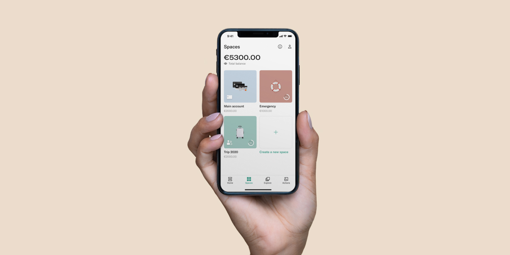

After onboarding to Spaces for the first time, it takes at least 6 actions for a user to adopt a feature. As a result, only 3.5% of users discovered the capabilities of what Spaces has to offer.
...surface features early in the user journey?
...help users understand how else they can use Spaces?
...increase awareness of other feature offerings from Spaces?

In a fast-paced environment, the challenge is always priortization in the product roadmap, so design can play a role in challenging the status quo with the insights gathered. I led workshops with designers and stakeholders to define concepts and initiatives and to align on the strategic impact we sought.

Along with previous research and data, I also conducted my own research using methods like user interviews, card sorting, usability tests to validate concepts, understand the overall user journey, and generate further insights. Here is an example of using card-sorting to better understand the importance behind each component and feature.

These were some discarded explorations of the creation flows and the details page that I worked on. Feedback was gathered from stakeholders and team members to iterate the designs further while keeping everyone involved and aligned. [new: old throwaway designs of both parts]

An improved design of a Spaces page with clearer affordances and a structured information hierachy that surfaces features as soon as users open or creates a new Space. [old/new side by side]

A new creation flow that showcases different use cases that guides users through tailored steps to optimize their Space for their needs. [main creation page with difference use cases (stealfrom slide)
